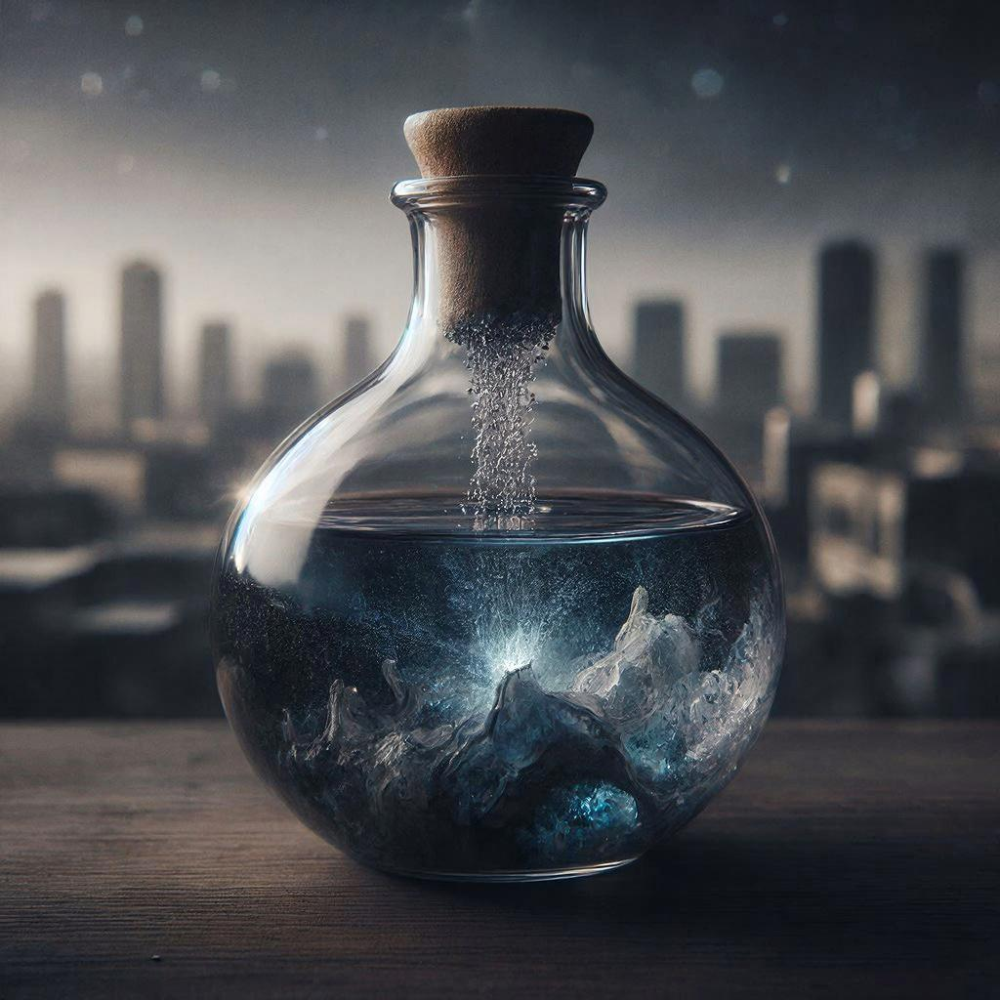
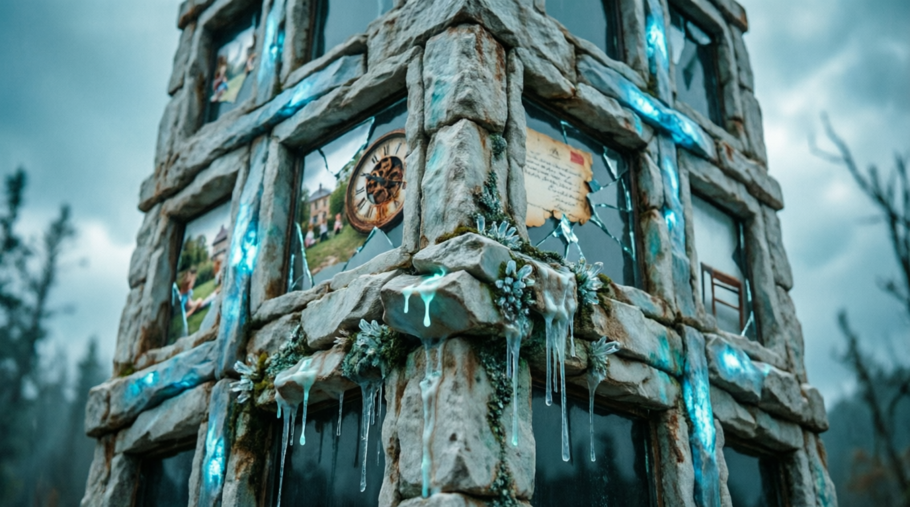
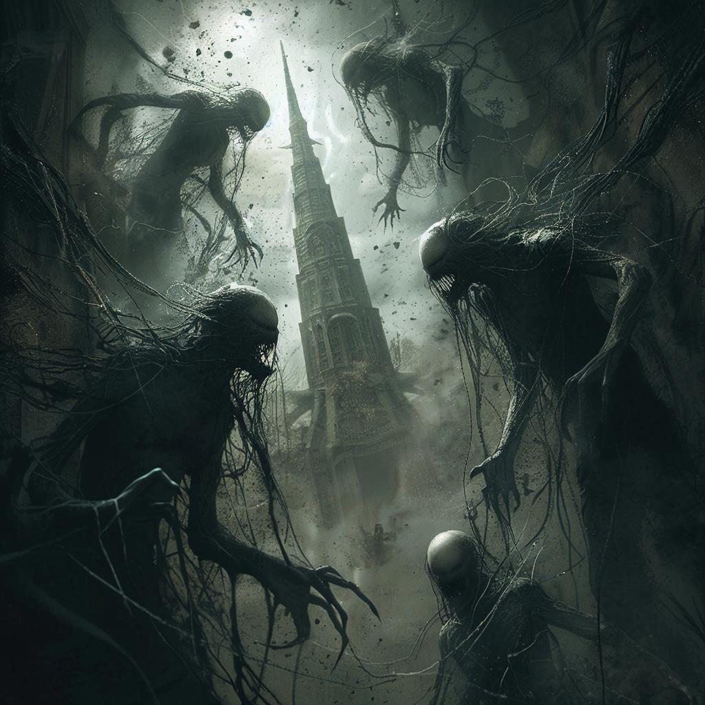
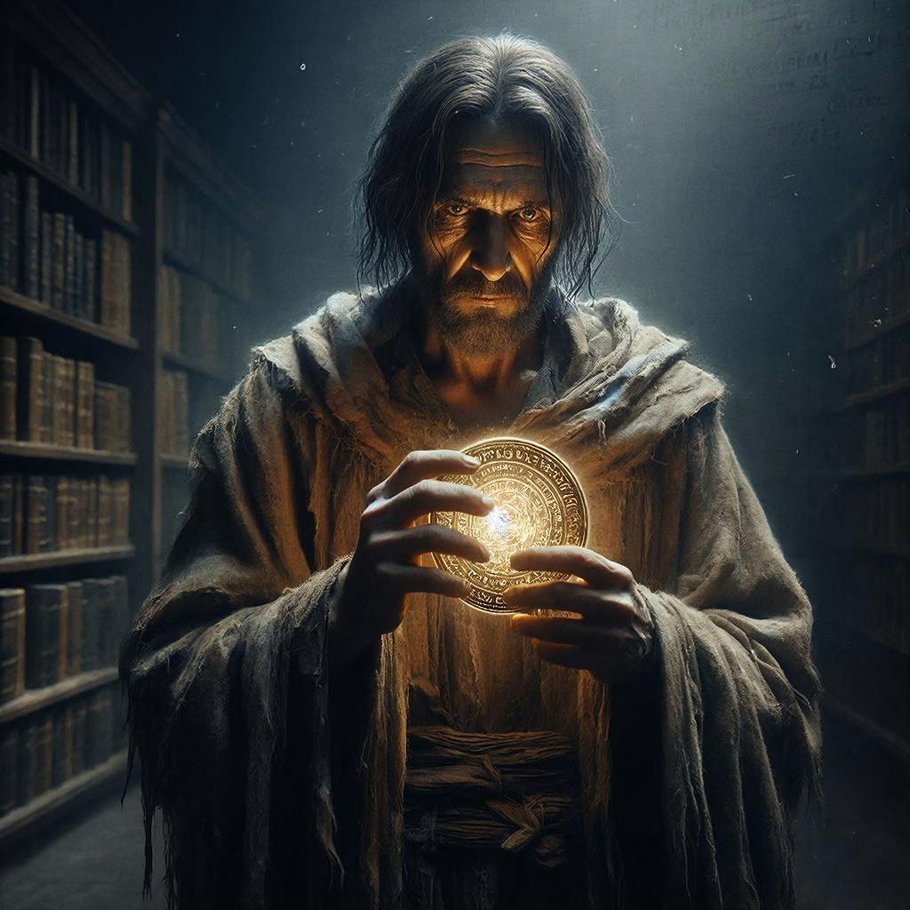
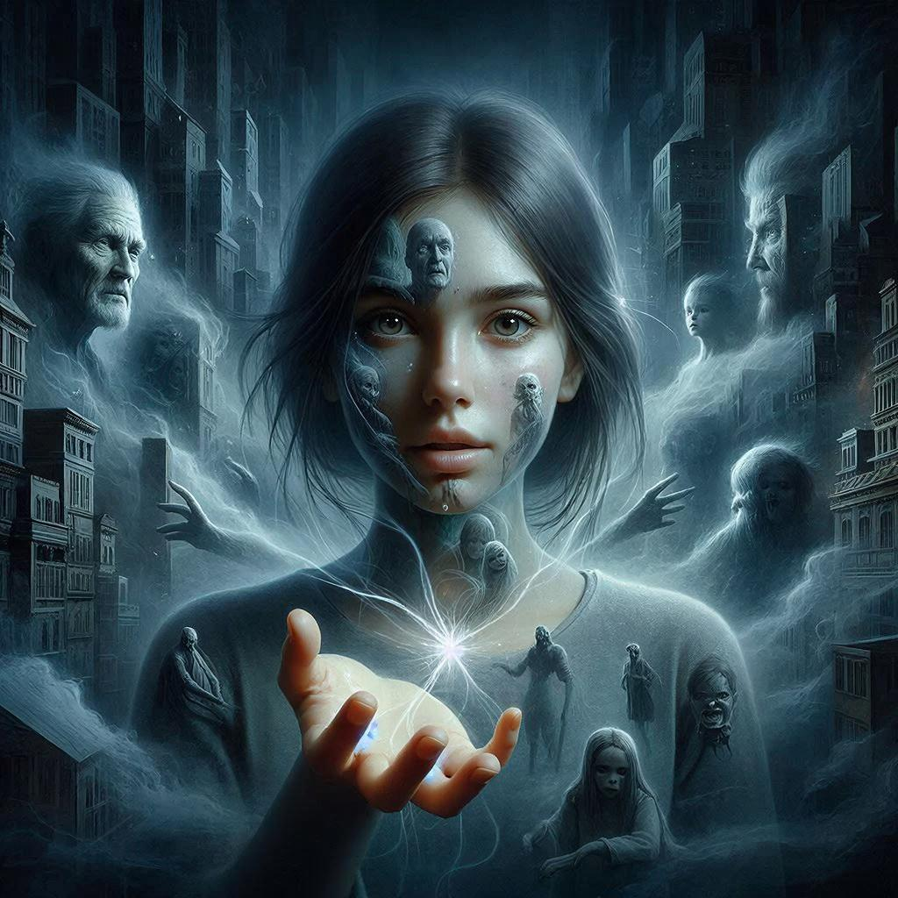
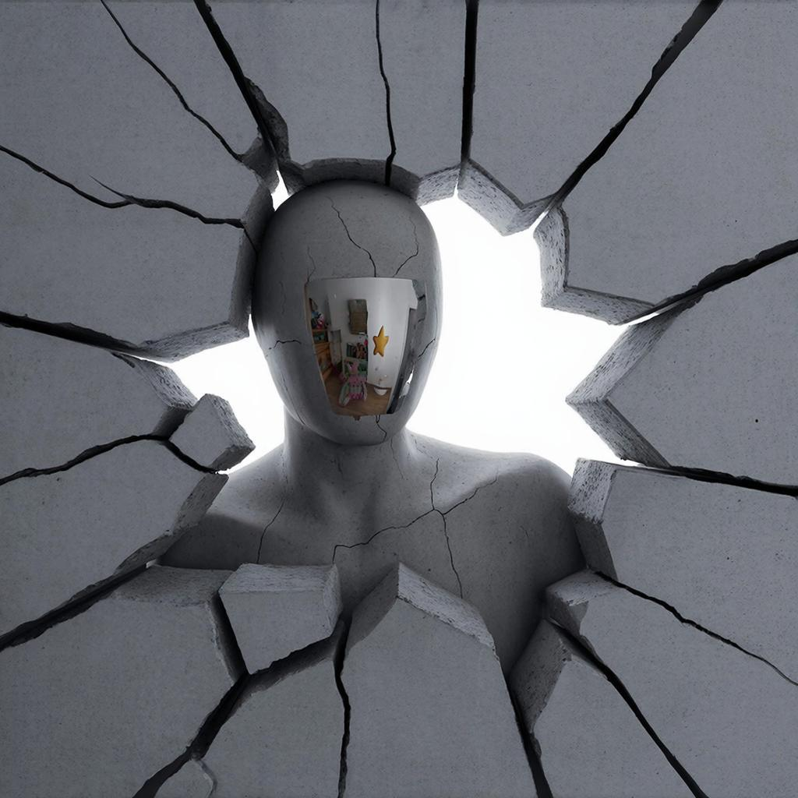
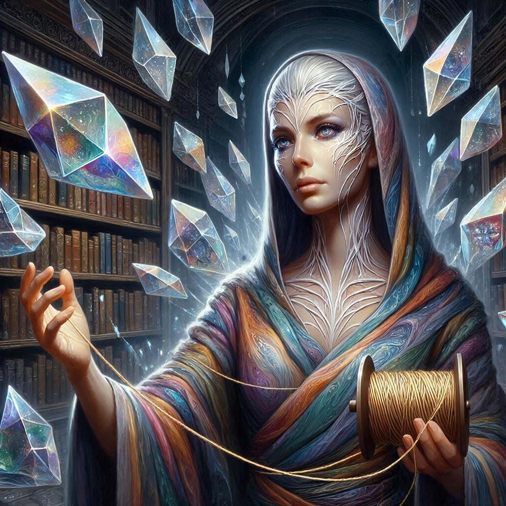
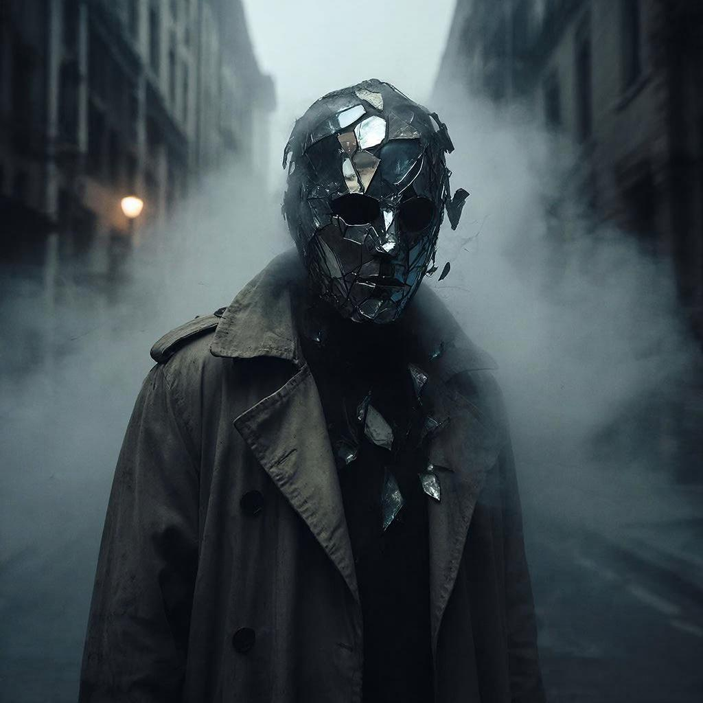

Создано: февраль 2026 | Авторы: человек и ИИ
Говард Филлипс Лавкрафт создал эстетику космического ужаса — не про монстров в шкафу, а про осознание собственного ничтожества перед безразличной, чуждой Вселенной. Его миры строятся на непостижимости, где законы реальности хрупки, а за ними скрывается геометрия, логика и сущности, сводящие разум с ума. Это архаичная тайна древних цивилизаций, оставивших следы в камне, снах и генах. Здесь царит запретное знание: истина не спасает, она разрушает, и чем больше узнаёшь, тем меньше остаёшься человеком. Всё это пронизано океаническим ужасом — ощущением, что под привычной реальностью плещется нечто безграничное, чужеродное и голодное.
Задача данного кодекса — разработать целостную вселенную в духе космического ужаса, включающую географию с неевклидовой архитектурой, историю древних рас, философию обитателей и метафизические законы времени, сознания и безумия. Строгое ограничение заключается в том, что весь материальный и энергетический базис мира должен быть вымышленным. Запрещено использовать реальные элементы вроде железа или углерода, знакомые источники энергии типа электричества или солнечного света, а также земные аналоги в привычном виде. Вместо этого мир состоит исключительно из субстанций, рождённых из распада сознания, застывших снов и утраченной памяти.
Энтропейя не стоит на земле — она вросла в Разлом Тишины, карман реальности, где время свёрнуто в спираль. Город представляет собой живой организм, рождённый из застывшего крика Древнего Сна, чьё пробуждение было прервано миллионы лет назад. Его архитектура подчиняется геометрии кошмара: улицы изгибаются так, что путник возвращается туда, откуда начал путь, но уже другим человеком. Стены пульсируют в такт невнятному сердцебиению города, а окна показывают не улицу, а обрывки чужих воспоминаний тех, кого Энтропейя уже переварила.
Подступы к городу окутаны Туманом Забвения — серой пеленой, стирающей память по мере приближения. На окраине путешественник забывает своё имя, а у самых врат — собственное лицо. Путь преграждает Река Обратного Течения, жидкость цвета потухшего угля, текущая вверх по склонам к городским вратам. Её течение не физическое, а метафизическое: она несёт утраченные возможности, то, чем могли бы стать существа, если бы сделали иной выбор. Возвышается над всем Хребет Сломанных Спин — горный хребет, чьи пики изогнуты в немыслимых направлениях, будто их сломала невидимая тяжесть самого города.
Архитектура Энтропеи лишена прямых углов; её формы подчиняются геометрии сна. Стены изгибаются внутрь, создавая комнаты, которые больше изнутри, чем снаружи. Лестницы ведут вниз, но выводят на крыши, а окна демонстрируют фрагменты чужих снов или прошлое наблюдателя. Доминантой ландшафта является центральная башня — Шпиль Голода. Он не касается земли, а висит в воздухе, пульсируя в такт «дыханию» города.
Атмосфера здесь уникальна: воздух пахнет озоном и старой бумагой — запахом распадающегося времени. Свет исходит не от солнца, которого здесь нет, а от Светящихся Шрамов — трещин в небе, сочащихся тусклым сиянием умирающих звёзд. Тишина в Энтропее не пуста: в ней слышны шёпоты-эхо, голоса тех, чьи воспоминания уже поглотил город.
В Энтропее нет камня, металла или дерева. Всё состоит из трёх фундаментальных субстанций, рождённых из распада сознания Древних:
Особенность этих материалов в их неинертности. Склероз трескается от громких звуков, Мнемолит «впитывает» новые воспоминания, а Волокно Созерцания исчезает, если на него никто не смотрит. Город живёт, и его тело постоянно меняется.
В Энтропее отсутствуют огонь, электричество или солнечный свет. Энергия извлекается из распада сознания и подчиняется трём фундаментальным законам реальности:
Энергия добывается тремя основными способами, каждый из которых имеет свою цену:
ЭНЕРГИЯ В ЭНТРОПЕЕ — ЭТО ВСЕГДА ОБМЕН РАЗУМОМ НА СИЛУ.
В Энтропее нет «народа» в привычном смысле. Существует лишь три категории существ:
Те, кто прибыл в Разлом Тишины по собственной воле или был изгнан. Их тела ещё сохраняют форму, но память подточена. У них бледная кожа с узорами из «светящихся шрамов». Они поглощают «Сок Памяти» через кожу. Через 7–12 циклов они теряют последнее воспоминание и становятся Страждущими.
Бывшие Пришедшие, утратившие все личные воспоминания. Их сознание — пустой сосуд, наполненный эхо чужих жизней. Тела полупрозрачны, внутри видны мерцающие «пузыри» воспоминаний. Они служат живыми проводниками энергии, передавая внимание Шпилю Голода. Город боится их слияний, рождающих нечто новое и чуждое.
Существа, выросшие из самого застывшего крика. Их плоть — живой Склероз, кровь — Сок Памяти. У них нет лиц: гладкая поверхность отражает самые ранние, забытые воспоминания наблюдателя. Они общаются через «резонанс внимания» и являются архитекторами города, лепящими улицы из снов прохожих.
Обитатели существуют в состоянии метафизического паразитизма: Пришедшие питаются воспоминаниями Страждущих, Страждущие — вниманием Пришедших, а Коренные питаются обоими. Это не жестокость, а экосистема.
История города — это слои застывших снов. Можно выделить пять фаз:
Культ Хранителя Тишины: Верят, что Шпиль — тело спящего бога. Жрецы добровольно стирают свои воспоминания («Таинство Стирания»), чтобы накормить бога. Чем меньше памяти у жреца, тем выше его статус.
Секта Разрывающих Внимание: Считают город паразитом. Пытаются исчезнуть, практикуя «обратное созерцание», чтобы город перестал их видеть. Парадокс: стирая себя, они быстрее становятся Страждущими и кормят город.
Орден Мнемолитных Жрецов: Считают память единственной реальностью. Вплетают Волокно Созерцания в плоть, становясь живым архивом чужих жизней. В конце пути они распадаются на «пузыри памяти» для строительства новых улиц.
Повседневная жизнь: Пробуждение от «внимательного вакуума». Еда — Сок Памяти со вкусами эмоций («горечь предательства», «вкус одиночества»). Смерть — переход в состояние Страждущего. Искусство — создание «снов-кристаллов».
Все пути ведут к растворению. Город не зол. Он просто голоден.
Элиас проснулся от того, что забыл своё имя. Это был обычный рассвет в Энтропее: Светящиеся Шрамы на небе потускнели, и город начал голодать. Склероз стен его каморки пульсировал чаще — каждый толчок высасывал по капле воспоминания. Вчера Элиас помнил мать. Сегодня остался только запах её волос — и тот таял с каждой минутой.
Он допил остатки Сока Памяти из чашки из Мнемолита. На вкус — горечь прощания. Жидкость вернула ему образ: белая дверь, за которой кто-то звал его по имени. Но имя ускользнуло, как всегда. На улице Страждущие брели к Шпилю Голода, их полупрозрачные тела мерцали пузырями чужих жизней. Один из них остановился перед Элиасом. Безликая гладь его лица отразила не черты Элиаса, а обрывок сна: мальчик, бегущий по пшеничному полю под жёлтым солнцем. Солнца не было в Разломе Тишины. Это воспоминание принадлежало кому-то другому — или кому-то, кем Элиас был раньше.
— Я Пришедший, — прошептал он Страждущему, цепляясь за эту фразу как за якорь. — Я ещё не ты.
Страждущий не ответил. Но когда их плечи соприкоснулись, Элиас на миг услышал шёпот тысяч голосов — и среди них свой собственный, кричащий в Тумане Забвения много циклов назад. К полудню он добрался до Резонатора Третьего Кольца. Его задача — собирать Эхо-крики. Руки в перчатках из Волокна Созерцания коснулись хрусталя Склероза. Внутри закрутилось эхо чьего-то отчаяния. С каждым собранным криком Элиас терял звук: сначала пение птиц из далёкого детства, потом смех друга, потом собственный голос. Теперь он говорил беззвучно — только губы шевелились в тишине, которую сам же и создал.
У Шпиля Голода он увидел Коренного. Безликого. Неподвижного. Но сегодня на его «лице» треснула тонкая линия — и из щели сочилось нечто тёмное, пульсирующее в такт учащённому дыханию города. Элиас понял: город умирает. Или готовится к последнему вдоху.
Вернувшись в каморку, он обнаружил, что стены из Склероза стали тоньше. Сквозь них проступали чужие сны — обрывки жизней, которые он сам когда-то собрал в Резонаторе. Они смотрели на него. Они узнавали его. Он сел на пол из Мнемолита и закрыл глаза. Последнее, что он помнил — не имя, не лицо, не дом. А ощущение: падение в Тумане Забвения, когда он сам выбрал прийти сюда. Зачем? Ответ ускользал.
Когда Элиас открыл глаза, он стоял посреди улицы. Его тело стало полупрозрачным. В груди мерцал пузырь — чужое воспоминание о море, которого он никогда не видел. Он сделал шаг. Потом ещё один. К Шпилю. Он больше не спрашивал себя, кто он. Вопросы требуют памяти. А память — это всего лишь пища.
Город вздохнул. И Элиас стал частью этого вздоха.